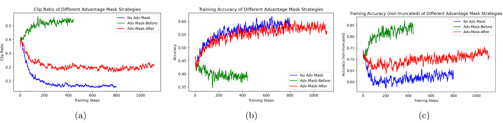
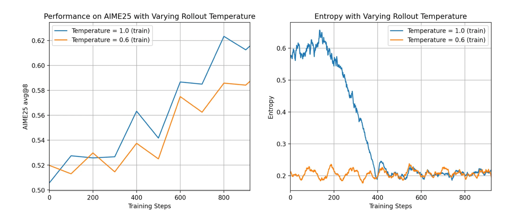
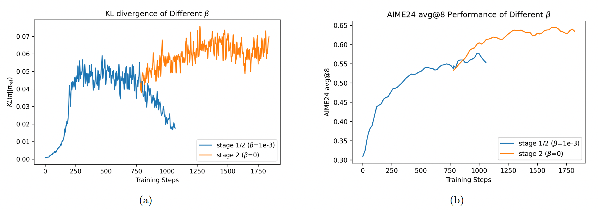
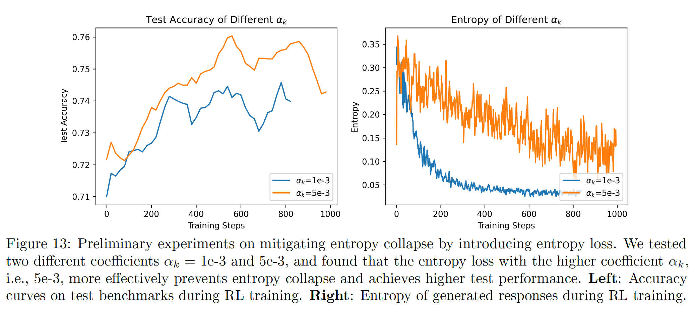
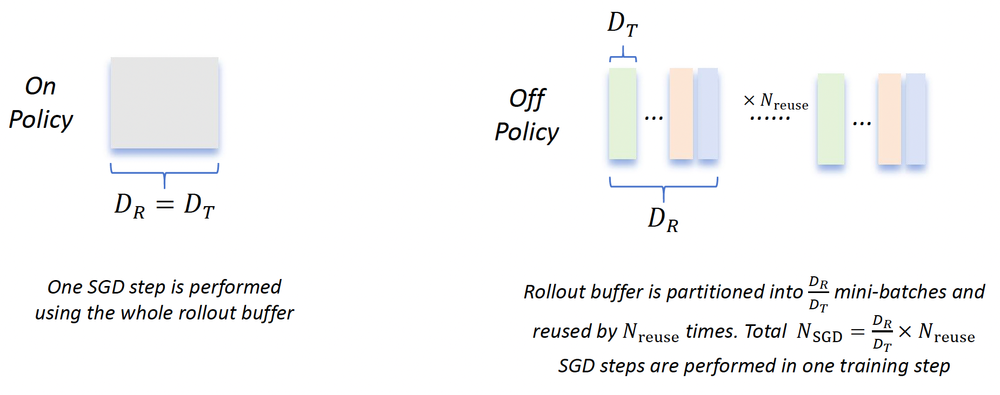
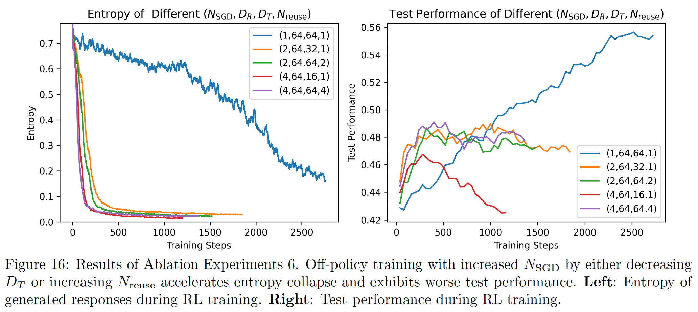

Skywork Open Reasoner 1#
Note
Building on the
DeepSeek-R1-Distill model series, our RL approach achieves notable performance gains, increasing average
accuracy across AIME24, AIME25, and LiveCodeBench.
Additionally, we
thoroughly investigate the phenomenon of entropy collapse.
MAGIC in Skywork-OR1#
Tip
We made the following refinements to the training strategy of vanilla GRPO:
Multi-Stage Training.
No Advantage Mask for Truncated Responses.
High-Temperature Sampling.
On-Policy Training.
We introduce the following characteristics into the loss function:
Adaptive Entropy Control.
No KL Loss.
Multi-Stage Training#
we used a shorter context length \(T\) in the initial stages. Once the model’s performance converged, we increased \(T\) in the subsequent stage. Our findings demonstrate that multi-stage training not only improves token efficiency in the initial stage but also preserves scaling ability.
No Advantage Mask for Truncated Responses#
We investigated several advantage mask strategies aimed at reducing the influence of truncated responses. However, our findings show that assigning negative advantages to truncated samples not only improves token efficiency but also preserves the model’s scaling ability in later stages. As a result, we did not apply any mask strategies in our final training pipeline.
Note
Ablation Experiments: Different Advantage Mask Strategies
No-Adv-Mask: We do not employ any advantage mask strategy.
Adv-Mask-Before: The truncated responses are
not involvedin the group advantage calculation for non-truncated responses, and the advantage of these truncated responses are set to 0.Adv-Mask-After: The truncated responses are
still involvedin the group advantage calculation for non-truncated responses, and the advantage of these truncated responses are set to 0.

High-temperature Sampling#
Note
Ablation Experiments: Different Online Sampling Temperatures \(\tau\)
High Temperature: \(\tau\) = 1.0.
Low Temperature: \(\tau\) = 0.6.

Adaptive Entropy Control#
While preventing premature entropy collapse via entropy regularization is beneficial, selecting an appropriate entropy loss coefficient is challenging – we introduce Adaptive Entropy Control, a method that adaptively adjusts the entropy loss coefficient based on the target and current entropy.
where \(c_0=0\) denote the initial adaptive coefficient.
No KL Loss#

We observe that, in Stage 2, the KL loss strongly pulls the actor model’s policy back toward the reference model. As a result, performance
on AIME24 fails to improve significantly once the actor’s policy becomes too similar to the reference policy. Based on this observation, we set \(\beta = 0\) for all training stages of our released models.
Empirical Studies on Mitigating Policy Entropy Collapse#
We hypothesize that the following two sources may influence the model’s entropy and convergence behavior:
Rollout diversity. If the rollout data contain a greater diversity of correct responses, this prevents the model from overfitting to a single correct trajectory.
Policy update. We also investigate how different components of the policy update influence entropy. We focus primarily on the number of stochastic gradient descent (SGD) steps per training step and the use of additional entropy control methods (e.g., entropy loss).
Premature Entropy Collapse Generally Manifests as Worse Performance#

The Impact of Off-policy Update by Increasing \(N_{\text{SGD}}\)#

It is clear that the number of SGD steps performed in one training step satisfies:
when \(N_{\text{SGD}}=1\), the policy update is purely on-policy; when \(N_{\text{SGD}}\ge 2\), the off-policy data is introduced into the policy update.
Note
Ablation Experiments: The Impact of Different Numbers of SGD Steps \(N_{\text{SGD}}\).
Consider the quadruple \((N_{\text{SGD}},D_R,D_T ,N_{\text{reuse}})\).
\(N_{\text{SGD}}=1\): The baseline experiment with the quadruple (1,64,64,1).
\(N_{\text{SGD}}=2\): We ran two experiments with the quadruples (2,64,32,1) and (2,64,64,2).
\(N_{\text{SGD}}=4\): We ran two experiments with the quadruples (4,64,16,1) and (4,64,64,4).

Experiments with \(N_{\text{SGD}} \in \{2, 4\}\) exhibit faster policy convergence, with entropy decaying to very small values within a few training steps. As a result, test performance fails to improve consistently once the model enters a low-entropy state. Off-Policy Data Harms Test Performance.
Preventing Premature Entropy Collapse#
Entropy Loss Is Sensitive to Training Data.
Adjusting the Coefficient of Entropy Loss Adaptively.
Using a properly chosen higher-clip ratio can prevent premature entropy collapse and lead to better test performance. However, the optimal higher-clip ratio is task-dependent.
Empirical Studies on Training Resource Allocation#
Tip
Rollout Time Dominates the Total Training Time.
Larger Batch Size, Better Test Performance.Larger Group Size, Better Test Performance.